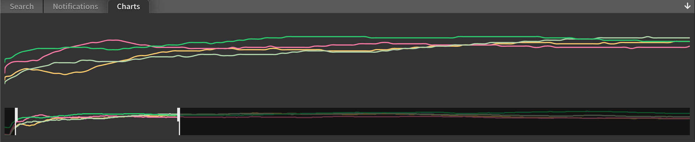
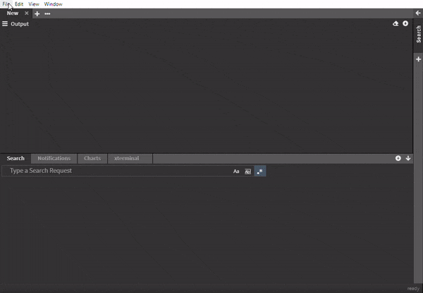

Charts
Getting a quick overview of what happened during a 24h-trace period can be daunting if the logfiles are huge (millions of log entries). A very neat way to get a quick overview is to show some graphs for what is happening.

In this graph we captured processor workload for different cores. Any numerical value can be captured by using a regular expression with a group.
Supported are
- integers
- floats
An example for a regular expression with such a capture group looks like this:
measured:\s(\d+)
This will match measured: 42 and pull out the value 42.
Here is an example of how this looks in action.

Create chart
Type a search request at the bottom and click the graph icon next to the search input.
Keyboard shortcut:
Shift + Enter
Edit chart
Created charts can be modified afterwards by simply right-clicking on the desired chart and selecting Edit.
When the edit is done press Enter to apply the changes.
Remove chart
Charts can be removed one by one by right-clicking on the chart and selecting Remove.
Another way is to drag&drop the chart on the bin icon at the bottom of the sidebar which appears as soon as the chart is picked up and moved around.
To remove all created charts at once right-click on any chart and select Remove all.
Convert to filter
If a chart needs to be converted into a chart, right-click on the chart and select Convert To Filter.
Another way to convert a chart into a filter is to drag&drop the chart in the Filters section on the sidebar.
En-/Disable chart
In search results
Charts can be en-/disabled in the search results by un-/checking the checkbox next to the corresponding chart.
In search results and output
Charts can also be en-/disabled completely by right-clicking the corresponding chart and select Disable.
If the disabled area is visible due to a chart or any other search component is disabled, the chart can be dragged and dropped into the area directly.
Save and load charts
To save the created charts and other search settings click on the Save button in the Manage section on the sidebar.
To load previously created charts and other search settings click on the Load button in the Manage section on the sidebar.